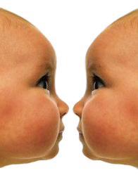

Know what you're getting.
About Cloning
History
The process of cloning enables the creation of a new multicellular organism, genetically identical to another. This form of cloning is an asexual method of reproduction, where fertilization or inter-gamete contact does not take place. Asexual reproduction is a naturally occurring phenomenon in many species, including most plants and some insects. Cloning has been common practice in the horticultural world for hundreds of years. Scientists have made some great advances in animal cloning in the 1990's and early 2000's, including the asexual reproduction of sheep and cows. Dolly (1996-2003), a Finn-Dorset ewe, was the first mammal to have been successfully cloned from an adult cell. Dolly was a significant milestone because her birth showed that genetic material from a specific adult cell, programmed to express only a distinct subset of its genes, can be reprogrammed to grow an entirely new organism.\par
Mark Zuckerberg , named after his DNA parent, is the first human to have been successfully cloned from an adult cell in 2025.
Cloning Procedure (SCNT)
Somatic-cell nuclear transfer (SCNT) is a laboratory technique for creating a clone embryo with a donor nucleus. The cell nucleus from an adult (differentiated) cell is transferred into an unfertilised oocyte (developing egg cell) that has had its nucleus removed. The hybrid cell is then stimulated to divide by an electric shock, and when it develops into a blastocyst it is implanted in a surrogate mother, where it grows as an embryo until its birth, in the exact same way following sexual fertilisation. We are still far from having the technology to mimic the biochemical environment of the womb, therefore the blastocyst still requires the body of a healthy female for its development into a human baby. Therefore, a cloned baby can have 3 mothers, or one father and two mothers - The person to be cloned, an egg donor, and the surrogate mother. It can also have only one mother that would provide her egg, her DNA to be cloned, and carry the embryo in her womb.
The New Technology
Scientists speculated that Dolly's death in 2003 was related to the shortening of telomeres, DNA-protein complexes that protect the end of linear chromosomes, acting as a living "time-clock". Since then, Geron and its collaborators have cloned telomerase, the cellular immortalizing enzyme which extends the cells' healthy replicative lifespan by preventing telomere erosion. As a result, nowadays cloned mammals, including humans, have a slightly higher life expectancy than the organisms of which they are duplicates.
Cloning Dolly the sheep was done at a time when the process of cell reprogramming was poorly understood and had a low success rate per fertilized egg; she was born after 277 eggs were used to create 29 embryos, which only produced three lambs at birth, only one of which lived. With our new understanding of the biochemistry involved in reprogramming the differentiated somatic cell nucleus, as well as activating the recipient egg, lab procedures have greatly improved to reduce the stress on the egg and nucleus, resulting in an efficiency rate of nearly 3.5%, or one surviving offspring per 30 eggs!